Что где менять, чтобы за 30–60 минут превратить шаблон в сайт конкретной оконной компании. Без правки кода.
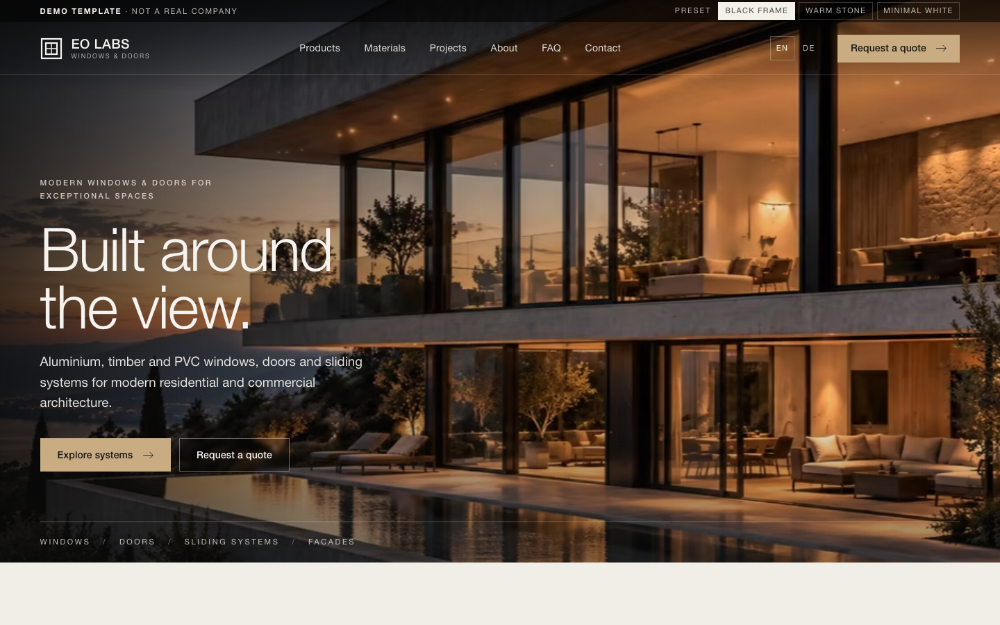
Содержание
Как это работает и как открыть админку
Общий порядок работы: от правок до готового сайта
General — компания, логотип, картинки
Contact — контакты, соцсети, зона работы
Branding — стиль сайта и цвета
Products — список продуктов
Materials — материалы и образцы отделок
Projects — проекты
Manufacturers — производители
FAQ — вопросы и ответы
Technical — технические показатели
SEO — заголовки и описание
Languages и Demo mode
Export / Import — сохранить и применить
Чего в админке нет (и где это менять)
Замена фотографий
Чек-лист перед запуском
Шаг 1
Как это работает и как открыть админку
Сайт — это набор готовых страниц, которые собираются из одного файла с данными клиента (data/client.config.js). Админка — это удобная форма, которая меняет эти данные, не заставляя вас открывать код.
Важно понимать. Админка работает локально, в вашем браузере. Она ничего не отправляет на сервер и не имеет пароля. Изменения видны на сайте сразу, но только в этом же браузере — пока вы не выгрузите файл и не пересоберёте сайт (см. следующий шаг).
Где открыть
Онлайн-версия для тренировки: https://baters05-afk.github.io/eo-labs-template-04/admin/
Локально (рабочий вариант для клиента): в папке проекта выполните npx http-server . -p 8804 -c-1 и откройте http://localhost:8804/admin/
Как устроен экран
Слева — разделы: General, Contact, Branding, Products, Materials, Projects, Manufacturers, FAQ, Technical, SEO, Languages, Demo mode, Export / Import.
Внизу слева — кнопка Preview site ↗ (открывает сайт с вашими правками) и статус «Saved locally» — правки сохраняются сами через долю секунды.
Поля с подписью EN / DE — тексты на каждом языке отдельно. Не заполнили немецкий — покажется английский.
Не выкладывайте папку admin на сайт клиента. Она нужна только вам.
Шаг 2
Общий порядок работы
Откройте админку и заполните разделы слева направо (General → Contact → Branding → Products → … ).
Нажимайте Preview site — проверяйте, как выглядит сайт. Вернитесь в админку, поправьте, посмотрите снова.
Когда всё готово: раздел Export / Import → Export client.override.js. Скачается файл.
Положите этот файл в папку data/ проекта с заменой (там уже лежит пустой client.override.js).
В терминале в папке проекта выполните:
node tools/build.js
Команда пересоберёт страницы /en/, /de/ и файлы для поисковиков. Без этого шага поисковик не увидит новые тексты.
Загрузите сайт на хостинг (Cloudflare / GitHub Pages / любой), кроме папокadmin, tools, src и файлов *.md.
Страховка: в Export / Import есть Export JSON — резервная копия. Её можно вернуть кнопкой Import JSON (например, на другом компьютере). Reset local changes стирает все локальные правки и возвращает демо-данные.
Если в админке что-то пропало после очистки браузера — правки хранятся в браузере. Поэтому по окончании работы всегда делайте Export.
Раздел 1 · General
General — компания, логотип, главные картинки
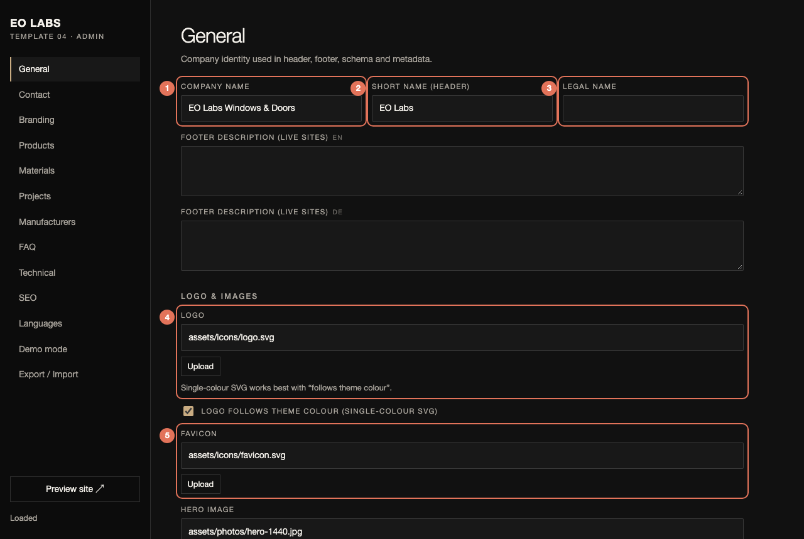
Раздел General. Красные номера — поля, которые чаще всего меняют.
Company name — полное название. Идёт в подвал (копирайт), в описание для поисковиков и Google. Пример: «Fensterbau Nord GmbH».
Short name (header) — короткое имя рядом с логотипом в шапке и подвале. Пример: «Fensterbau Nord». Длинное название в шапку не влезет.
Legal name — юридическое название для копирайта и структурированных данных. Можно оставить пустым.
Logo — путь к файлу логотипа (например assets/client/logo.svg). Кнопка Upload нужна только для быстрого просмотра. Для готового сайта положите файл в assets и укажите путь. Ниже галочка: Logo follows theme colour — включена для однотонного SVG (он сам станет белым/чёрным по теме); для цветного логотипа или PNG галочку снимите.
Favicon — маленькая иконка во вкладке браузера (лучше SVG или PNG 32×32).
Ниже на этой же странице — картинки: Hero image (главное фото), Hero image — mobile (отдельный кадр для телефона, необязательно), CTA image (фото у блока «Get a tailored recommendation») и Technical profile image (разрез профиля). Подробно про фото — в конце инструкции.
Раздел 2 · Contact
Contact — контакты, соцсети, зона работы
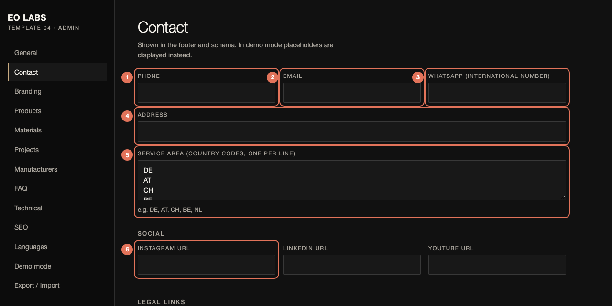
Раздел Contact.
Phone — телефон. Показывается в подвале как ссылка «позвонить».
Email — почта. Ссылка в подвале; на неё же уходит письмо, если у формы заявки не задан адрес приёма.
WhatsApp — номер в международном формате (например +49 30 1234567). В подвале появится ссылка на чат.
Address — адрес одной строкой.
Service area — коды стран по одному в строке: DE, AT, CH, NL, BE … Показываются в подвале как «Service area» и передаются Google.
Instagram / LinkedIn / YouTube — ссылки на страницы. Пустые не показываются.
Ниже — Legal links: ссылки на «Datenschutz/Privacy», «Terms», «Cookie settings». Пустые не показываются.
Пока включён Demo mode, вместо ваших контактов в подвале стоят серые заглушки «Added when the site goes live» — так задумано, чтобы демо не выдавало выдуманные номера. Контакты появятся после выключения демо-режима.
Раздел 3 · Branding
Branding — стиль сайта и цвета
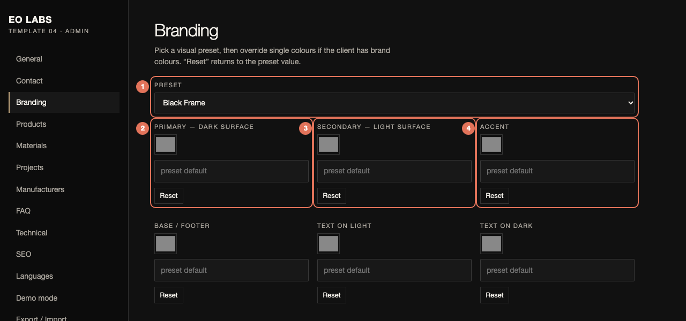
Раздел Branding.
Preset — общий характер сайта, переключается одним выбором:
Black Frame — тёмный, строгий, тонкий шрифт (по умолчанию);
Warm Stone — тёплые «каменные» тона и шрифт с засечками;
Minimal White — светлый, воздушный, чёрный акцент.
Меняет шрифты, фон секций, кнопки и фильтр на фотографиях.
Primary — цвет «тёмных» секций (Precision, Materials, About, CTA).
Secondary — цвет «светлых» секций (Products, Projects, Configurator, FAQ).
Accent — цвет кнопок и акцентов (по умолчанию тёплый бежевый).
Ещё есть Base / footer (фон подвала), Text on light / on dark и Muted text. Кнопка Reset возвращает цвет пресета. Меняйте цвета только если у клиента есть фирменные — иначе оставьте пресет.
Проверяйте контраст: светлый текст на светлом фоне читаться не будет. Если сомневаетесь — нажмите Reset.
Раздел 4 · Products
Products — список продуктов
Это блок «The range» под четырьмя плитками: фильтруемый список систем. Нажмите Add, чтобы добавить продукт; у каждого есть Edit, Delete и стрелки ↑ ↓ для порядка.
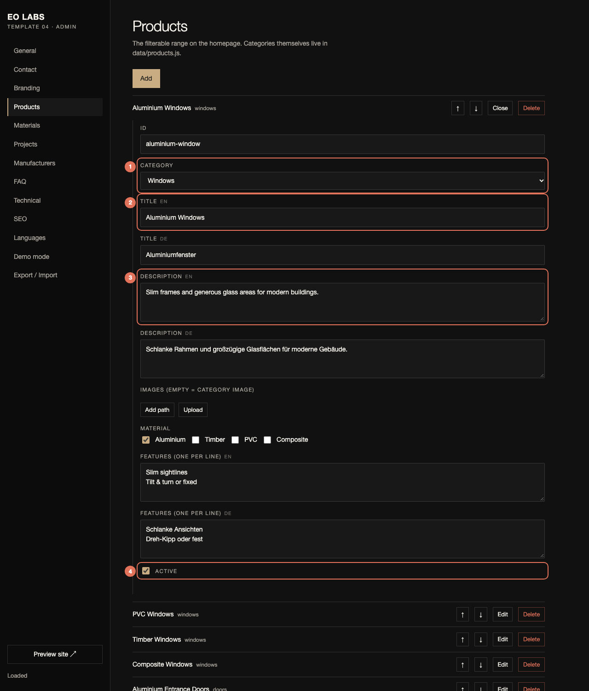
Редактирование продукта (нажата кнопка Edit).
Category — к какой плитке относится (Windows, Doors, Sliding, Facades). От этого зависит фильтр.
Title EN / DE — название на каждом языке.
Description EN / DE — одно-два предложения. Без выдуманных цифр и обещаний.
Active — выключите галочку, чтобы скрыть продукт, не удаляя его.
Ниже полей: Material (галочки — из чего продукт; по ним работает фильтр «Material» и конфигуратор) и Features (преимущества, по одному в строке, на каждом языке).
Связь с конфигуратором: какие материалы, отделки и стёкла доступны для каждой категории, задаётся в data/client.config.js (поля availableMaterials, availableFinishes, availableGlass). Пример: у «Doors» нет PVC — в конфигураторе он серый и недоступен.
Раздел 5 · Materials
Materials — материалы и образцы отделок
Секция «Materials that last»: четыре колонки с цветными образцами. Каждый образец — это «финиш» (Finish).
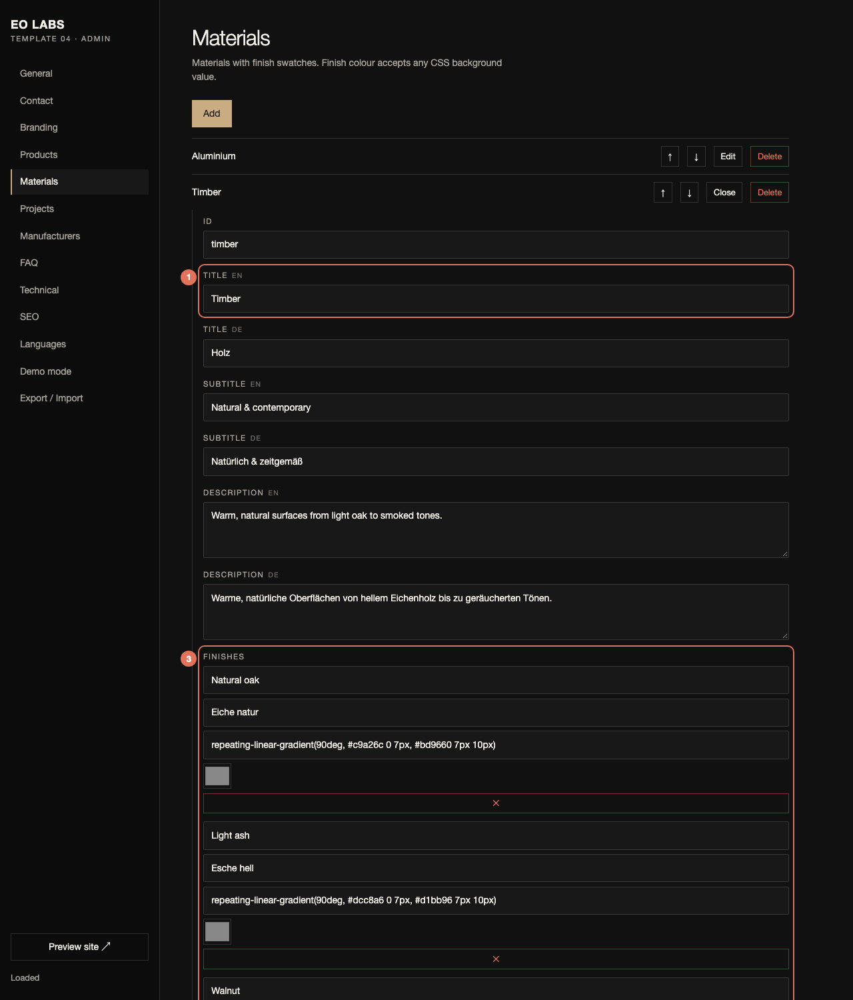
Редактирование материала (на примере Timber). Ниже — список образцов.
Title EN / DE — название материала (Aluminium, Timber, PVC, Composite).
Finishes → Name EN / DE — название образца («Anthracite», «Natural oak»). Оно же читается экранными программами и появляется при выборе в конфигураторе.
Finishes → цвет — можно вписать цвет (#3a3d40), нажать на квадратик-палитру, или вписать градиент/узор. Add finish добавляет образец, ✕ удаляет.
Также: Subtitle (короткая подпись под названием), Description, Features (список свойств).
Раздел 6 · Projects
Projects — проекты
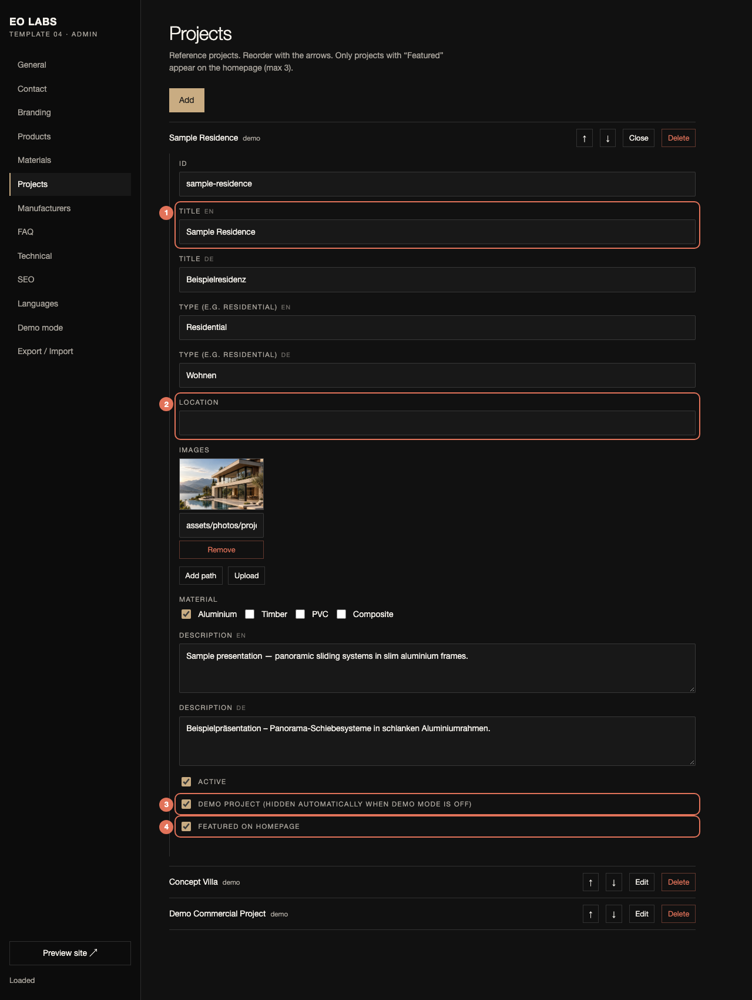
Редактирование проекта.
Title EN / DE — название объекта.
Location — город/регион. Если поле пустое, место на сайте не показывается.
Demo project — галочка для демонстрационных проектов. Когда Demo mode выключен, такие проекты скрываются автоматически. Для реальных проектов галочку снимите.
Featured on homepage — показывать на главной (максимум три первых с этой галочкой). Порядок меняется стрелками ↑ ↓ в списке.
Ниже: Type (Residential, Commercial …), Images (добавляйте пути к фото — они образуют галерею), Material, Description.
Никогда не выдавайте демо-картинки за реальные объекты клиента. Реальные проекты — только с настоящими фотографиями клиента.
Раздел 7 · Manufacturers
Manufacturers — производители систем
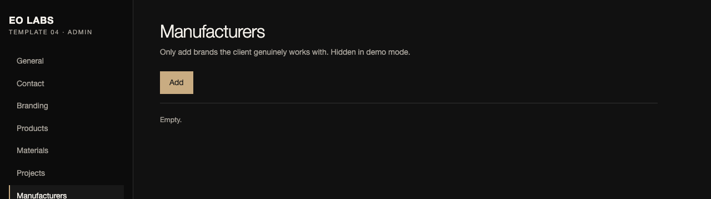
Раздел изначально пустой — это сделано намеренно.
Нажмите Add и заполните: Name, Logo (путь к файлу логотипа бренда), URL (сайт бренда), Active.
Добавляйте только тех производителей, с которыми клиент действительно работает. В демо-режиме блок скрыт, чтобы шаблон не «заявлял» партнёрство. Блок с логотипами появится над FAQ сам, как только будет хотя бы один активный производитель и Demo mode выключен.
Раздел 8 · FAQ
FAQ — вопросы и ответы
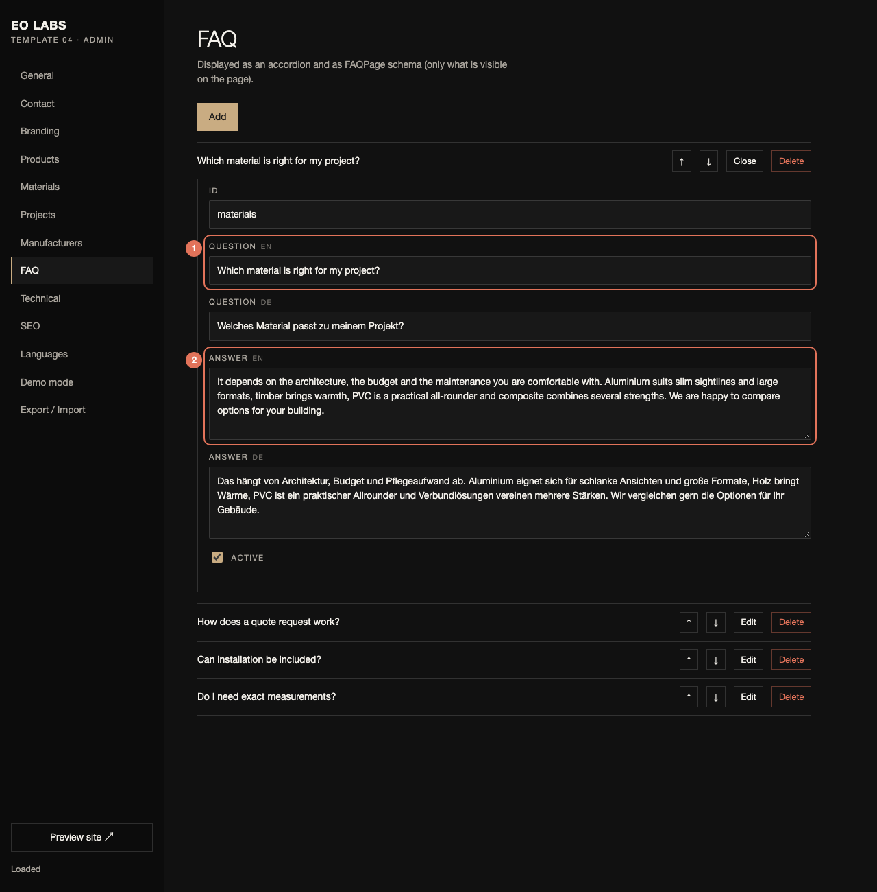
Редактирование вопроса.
Question EN / DE — вопрос.
Answer EN / DE — ответ. Пишите только то, что правда для клиента (сроки, гарантия, районы работы). Эти тексты видит и Google (структурированные данные FAQ).
Кнопки Add / Delete / ↑ ↓ — как в других списках. Если все вопросы неактивны, блок FAQ и пункт «FAQ» в меню исчезают.
Раздел 9 · Technical
Technical — технические показатели
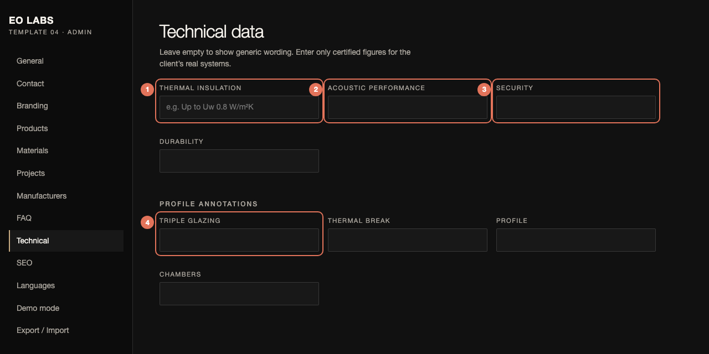
Раздел Technical.
Thermal insulation — например «Uw от 0,8 W/m²K». Пусто = на сайте «High thermal performance».
Security — например «RC2 (опция)». Пусто = «Security options available».
Profile annotations (Triple glazing, Thermal break …) — необязательные значения под подписями на фото разреза профиля.
Вписывайте только сертифицированные значения реальных систем клиента. Если цифры не подтверждены документами — оставляйте поля пустыми: сайт покажет нейтральные формулировки без обещаний.
Раздел 10 · SEO
SEO — заголовки, описание, отправка заявок
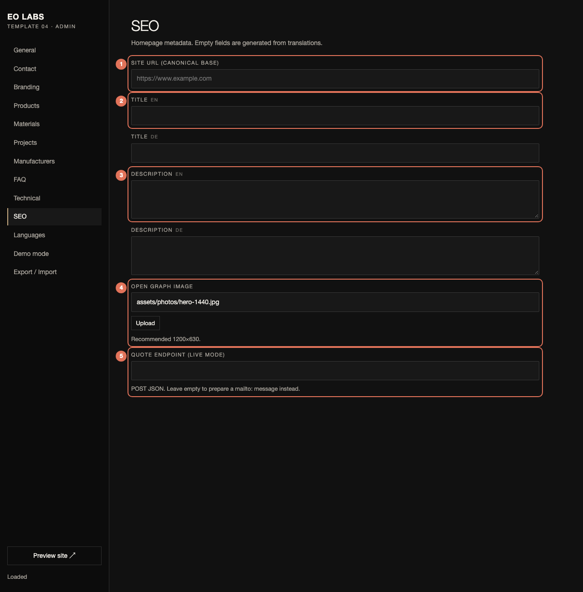
Раздел SEO.
Site URL — адрес сайта клиента, например https://www.fensterbau-nord.de. Нужен для canonical, hreflang, карты сайта и превью в соцсетях. Обязательно заполните перед запуском.
Title EN / DE — заголовок в Google (до ~60 знаков): «Компания — главное, город». Пусто = автогенерация.
Description EN / DE — описание под заголовком в Google (до ~155 знаков).
Open Graph image — картинка для превью ссылки в мессенджерах и соцсетях (рекомендуется 1200×630, JPG/PNG — SVG не подойдёт).
Quote endpoint — адрес, куда отправлять заявки клиентов (POST JSON). Пусто = после заявки откроется письмо на адрес из Contact. В демо-режиме заявки не отправляются вообще.
Пока Demo mode включён, для поисковиков стоит запрет индексации (noindex), и используется демо-заголовок «Windows & Doors Website Template — EO Labs Demo». Ваши SEO-тексты вступают в силу после выключения демо-режима.
Разделы 11–12 · Languages и Demo mode
Languages и Demo mode
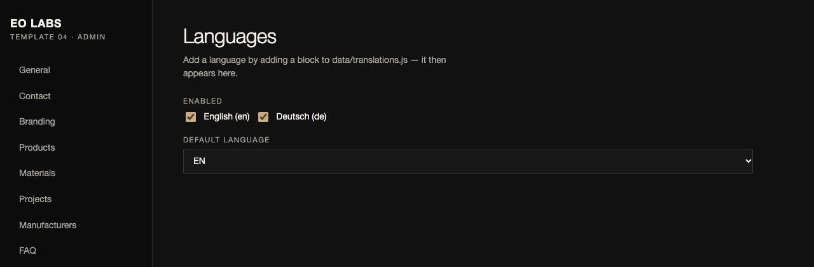
Languages.
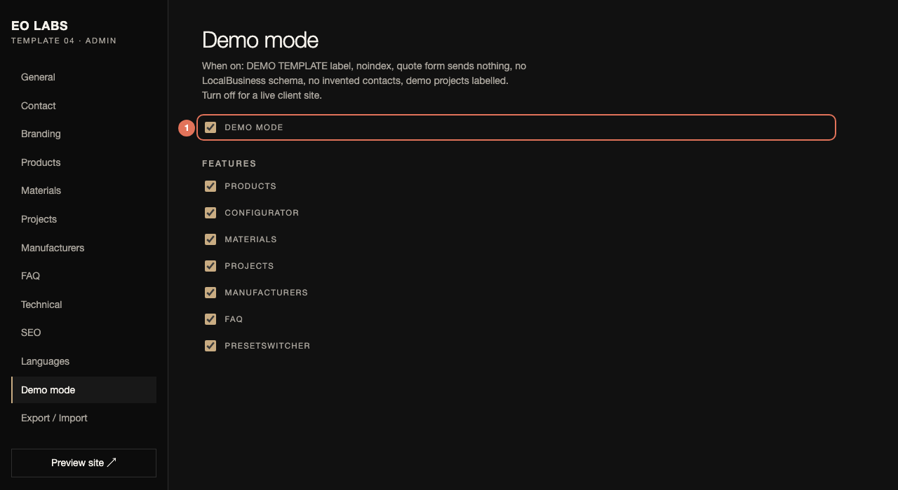
Demo mode.
Languages
Галочками отмечаются включённые языки, ниже — язык по умолчанию. Сейчас доступны English и Deutsch. Каждый язык — отдельный адрес: /en/, /de/. Чтобы добавить нидерландский или французский, разработчик добавляет блок nl или fr в data/translations.js — тогда язык сам появится в списке, а страница /nl/ создастся при сборке.
Demo mode (красный номер 1 на второй картинке)
Включён (демо)
Выключен (боевой сайт)
Плашка «DEMO TEMPLATE»
есть
нет
Индексация Google
запрещена
разрешена
Заявки
ничего не отправляется
уходят на endpoint / почту
Контакты в подвале
серые заглушки
ваши данные
Демо-проекты
показаны, подписаны «Demo imagery»
скрыты
Производители, LocalBusiness
нет
если данные заполнены
В этом же разделе — переключатели функций (Features): можно скрыть Configurator, Materials, Projects, Manufacturers, FAQ или переключатель пресетов (он нужен только для показа клиенту).
Раздел 13 · Export / Import
Export / Import — сохранить и применить
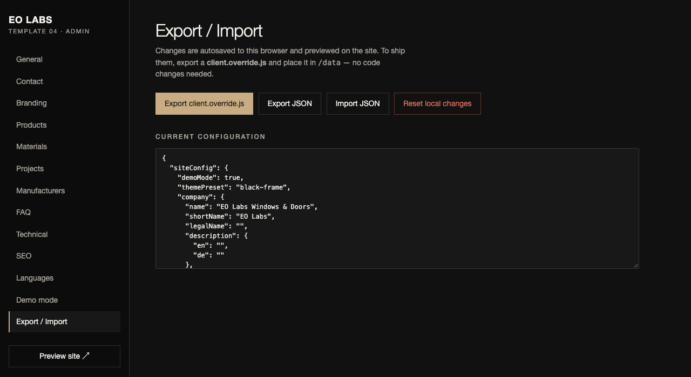
Раздел Export / Import.
Кнопка
Что делает
Export client.override.js
Главный файл: кладётся в data/, после этого запускается node tools/build.js. Так правки попадают на боевой сайт.
Export JSON
Резервная копия всех данных.
Import JSON
Загрузить ранее сохранённую копию (или конфигурацию другого клиента).
Reset local changes
Стереть все локальные правки и вернуть демо-данные. Действие необратимо — сначала сделайте Export.
Внизу страницы виден текущий JSON всех данных — можно скопировать или отправить коллеге.
Дополнительно
Чего в админке нет — и где это менять
Что
Где менять
Заголовки секций, тексты кнопок, подписи форм (например «Built around the view.»)
data/translations.js или блок translations в client.override.js. Пример:
Плитки Windows / Doors / Sliding Systems / Facades (4:5)
project-1.jpg … project-3.jpg
Проекты (3:2)
cta.jpg
Фото у блока «Get a tailored recommendation»
profile.jpg
Разрез профиля в секции Precision
Выполните:
node tools/images.js
Появится папка assets/photos/ и файл manifest.json с готовыми описаниями картинок.
Перенесите нужные записи из manifest.json в data/client.config.js (поля hero.image, hero.imageMobile, categories[].image, projects[].images, cta.image, technical.image). Алт-тексты (описания для незрячих и поисковиков) заполните для каждого фото.
Точка фокуса: поле hero.focal (например '70% 50%') — какую часть фото не обрезать на широких экранах. Для телефона используется отдельный кадр hero-mobile.jpg.
Демо-фотографии в шаблоне созданы нейросетью и подписаны «Demo imagery». Для клиентского сайта используйте его реальные фотографии объектов.
Финиш
Чек-лист перед запуском
Проверьте
☐
Логотип, название, короткое имя, favicon заменены
☐
Контакты, зона работы, соцсети, ссылки на юридические страницы заполнены
☐
Пресет выбран; фирменные цвета (если есть) заданы, текст читается
☐
Продукты и материалы — реальные; неиспользуемые скрыты (Active)
☐
Проекты — только реальные, с настоящими фото; у них снята галочка Demo
☐
Производители — только реальные; логотипы добавлены
☐
FAQ — ответы соответствуют условиям клиента
☐
Технические показатели — только подтверждённые (или пусто)
☐
SEO: Site URL, заголовки, описания, OG-картинка; endpoint заявок проверен